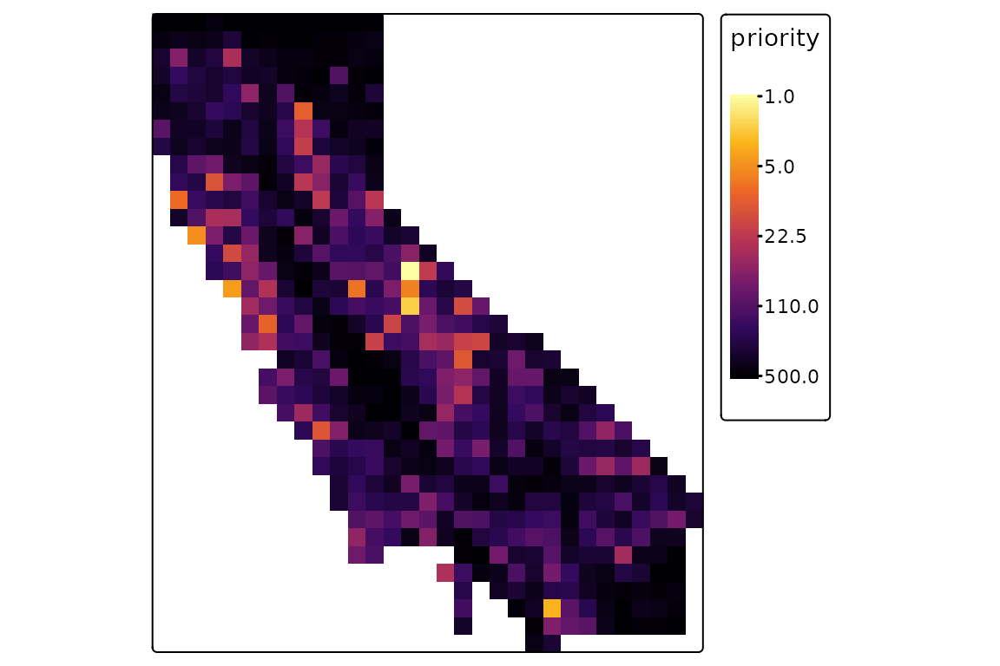
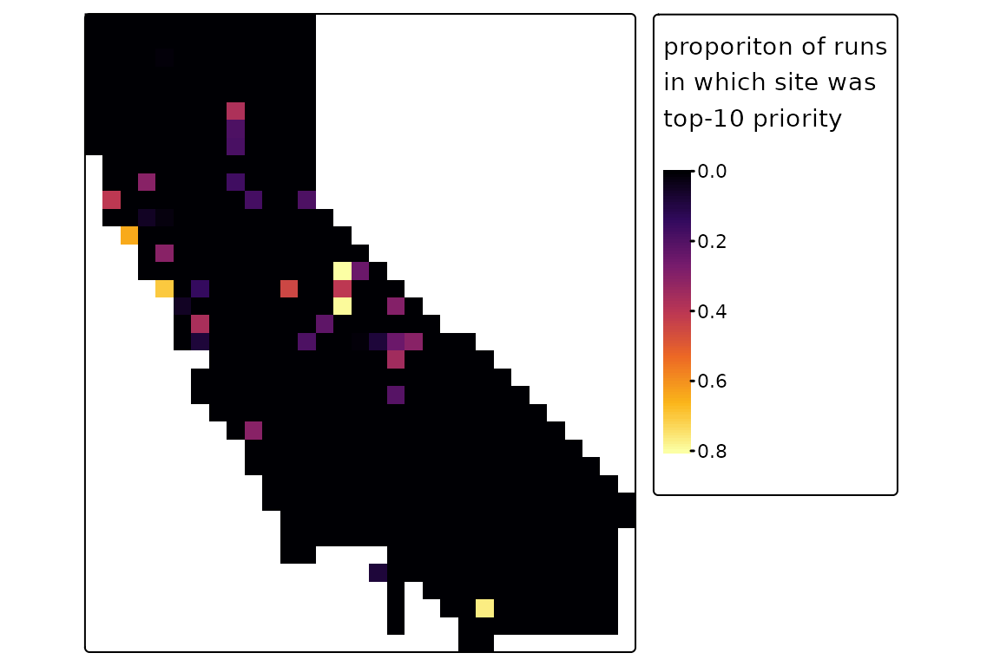
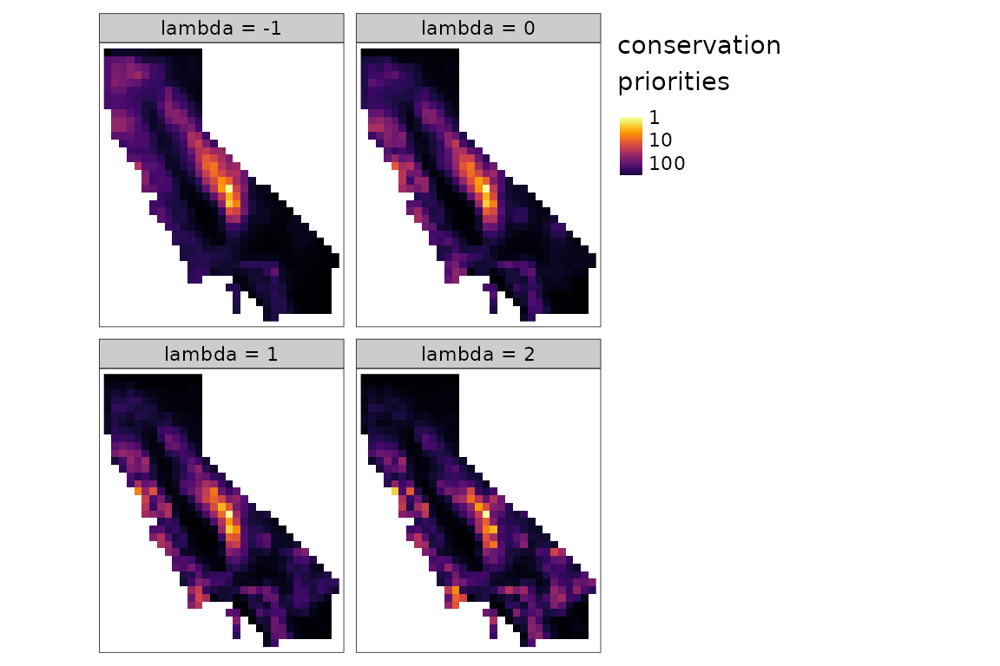
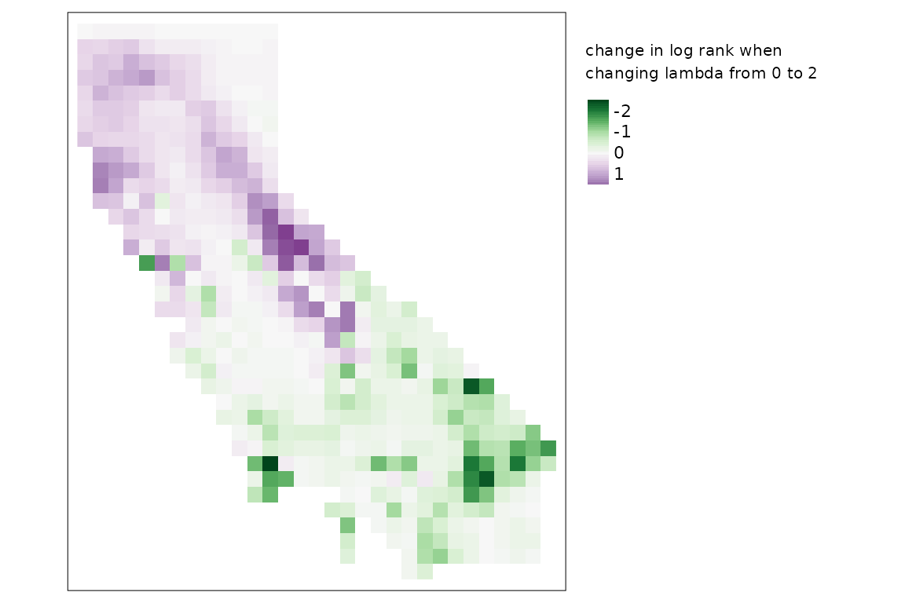

Conservation prioritization
prioritization.RmdIntroduction
Phylogenetic diversity was originally conceived as a metric to inform conservation, and spatial conservation planning is a core application of spatial phylogenetics. Spatial conservation planning involves identifying priority locations for actions like the creation of new protected areas.
There are a diversity of sophisticated tools available for conservation planning. This package performs conservation prioritization using a stepwise algorithm that selects an ordered ranking of priority sites for the creation of new protected areas. Unlike many other algorithms, this method can utilize quantitative community data (rather than just binary presence-absence data), and it can utilize quantitative data on the relative degree of protection offered by different types of protected area (rather than just binary protected-unprotected data).
Prioritization is handled by the function
ps_prioritize(). A site’s priority ranking is a function
of:
- its current protection level
- the occurrence quantities for all lineages present in the site, including terminal taxa and larger clades
- the evolutionary branch lengths of these lineages on the phylogeny, which represent their unique evolutionary heritage
- the impact that protecting the site would have on these lineages’ range-wide protection levels
- the compositional complementarity between the site, other high-priority sites, and existing protected areas
- lambda, a free parameter determining the shape of the conservation benefit function (see below)
This vignette covers basic conservation optimization, probabilistic prioritization, and further detail about conservation benefit functions.
Basic optimization
Let’s use the example data set for California mosses to perform a conservation optimization that ranks every grid cell across the state.
At every step of the iterative ps_prioritize()
algorithm, the marginal value of fully protecting each individual site
is calculated. Under a basic optimization
(method = "optimal"), the site with the highest marginal
value is marked as protected, marginal values are re-calculated, and
this process is repeated until all sites (or max_iter
sites) are protected. Sites selected earlier in the process are
considered higher priority.
In addition to the required spatial phylogenetic data set, the other
input data that one might want to provide is the location and
effectiveness of existing protected areas, which are specified via the
init argument. This can be binary data representing
protected versus unprotected sites, or continuous data with values
between 0 and 1 representing the degree of protection (for example,
perhaps because a given spatial unit is only partially covered by
protected land, or because land management in sites like national
forests is only partly oriented toward biodiversity protection). For
this example, we’ll just specify an initial protection gradient from
north to south. For simplicity we’ll just provide a vector of initial
values, but we could also provide a raster layer matching the
spatial element of our data set.
First let’s load the libraries we’ll need, and initialize a
phylospatial data set using the example data for California
mosses. (See vignette("phylospatial-data") for details on
constructing phylospatial objects.) We’ll also create a
variable called con specifying our (arbitrary) initial
conservation values, and pass it to ps_prioritize() with
our spatial phylogenetic data. Plotting the result, the highest-priority
sites are those with low rank values, shown in yellow.
library(phylospatial); library(tmap); library(magrittr)
#> Breaking News: tmap 3.x is retiring. Please test v4, e.g. with
#> remotes::install_github('r-tmap/tmap')
ps <- moss_data("prob", "rast")
con <- seq(1, 0, length.out = nrow(ps$comm))
priority <- ps_prioritize(ps, init = con, progress = FALSE)
tm_shape(priority) +
tm_raster(palette = "-inferno", style = "log10",
title = "conservation\npriorities") +
tm_layout(legend.outside = T)
Probabilistic prioritization
The routine shown above gives the optimal priority ranking, based on the assumption that sites are selected in the optimal order. This is an informative result and a relatively lightweight computation, but it has limitations. First, assuming optimal behavior may be unrealistic. And second, since the algorithm values complementarity (i.e. protection of sites that have distinct, non-redundant biotic communities), sites with high conservation value that could be attractive real-world priorities can be entirely overlooked if they are compositionally similar to sites that were already selected because they have slightly higher value.
Probabilistic prioritization, activated with
method = "probable", addresses these issues. At each
iteration, instead of protecting the site with the highest marginal
value as done in the "optimal" method, this approach
protects a random site, selected with a probability proportional to its
marginal value. The trade-off is that individual runs of the algorithm
can be highly variable, so the algorithm needs to be run many times, and
prioritization rankings summarized across these repeated runs. When
using the probabilistic method, ps_prioritize() returns
summary statistics for each site including its average priority rank
across reps, various quantiles of its rank distribution, and the
proportion of reps in which a site was among the top-ranked sites.
Running a large number of n_reps can substantially
increase computation times, but there are two ways to help mitigate run
times. First, you can use parallel processing by increasing
n_cores above the default of 1. Second, you can set
max_iter to a relatively small number, which stops the
algorithm after this number of sites have been added. For example, if
your data set has 1000 sites, setting max_iter = 10 can
reduce run times by almost two orders of magnitude. While you won’t get
a full rank prioritization of all sites from any individual rep, you
will get the proportion of reps in which a site is in the top 10, which
is arguably even more informative.
Let’s demonstrate that here. Comparing this to the optim:
priority <- ps_prioritize(ps, init = con, n_reps = 1000,
method = "prob", max_iter = 10,
progress = FALSE)
tm_shape(priority$top10) +
tm_raster(palette = "inferno", style = "cont",
title = "proporiton of runs\nin which site was\ntop-10 priority") +
tm_layout(legend.outside = T)
Conservation benefit functions
In the examples above, we used the default value for the
lambda parameter. lambda controls the relative
priority placed on protecting initial populations of every taxon versus
more populations of more phylogenetically distinct taxa. More precisely,
it determines the shape of the benefit() function that
converts the proportion of a taxon’s range that is protected into a
conservation benefit measure that is used in calculating the marginal
value of sites during prioritization.
We can use the function plot_lambda() to compare the
shapes of benefit functions under different lambda values:
 A value of
A value of lambda = 0 places equal marginal value on
protecting additional populations of a taxon regardless of how much of
its range is already protected. The default of lambda = 1
places higher priority on protecting populations of unprotected taxa,
but still places some value on increasing the protection of taxa that
are already reasonably well protected. Increasing the value to
lambda = 2 strongly emphasizes protecting the first few
percent of a taxon’s range, and places virtually no value on increasing
protection beyond 50%. Lambda can also be negative, which places greater
value on “finishing the job” of protecting the entire range of a lineage
than on “starting the job” of protection a portion of its range;
negative values are not likely to be useful in most practical
applications.
Deciding which value to use is a subjective choice, and you should consider what makes the most sense for your particular use case. It can also be useful to compare different values to understand how sensitive your results may be to this choice. Here, let’s compare optimizations using lambda values of -1, 0, 1, and 2:
lambda <- -1:2
priority <- terra::rast(lapply(lambda, function(x){
ps_prioritize(ps, init = con, lambda = x, progress = FALSE)
}))
#> Warning in ps_prioritize(ps, init = con, lambda = x, progress = FALSE):
#> choosing a negative value for `lambda` is not generally recommended.
priority <- setNames(priority, paste("lambda =", lambda))
tm_shape(priority) +
tm_raster(palette = "-inferno", style = "log10",
title = "conservation\npriorities") +
tm_layout(legend.outside = T)
In this case, as we increase the value of lambda, we can see priorities shifting away from the core area in the center of the map and away from the northwest part of the study area, to cover more areas in the southeast portion of the study area. To further highlight these differences, let’s make a map of the difference between the two right-hand panels above (lambda of 0 versus 2):
diff <- log(priority[[4]]) - log(priority[[2]])
tm_shape(diff) +
tm_raster(palette = "-PRGn", style = "cont",
title = "change in log rank when\nchanging lambda from 0 to 2") +
tm_layout(legend.outside = T)
#> Variable(s) "NA" contains positive and negative values, so midpoint is set to 0. Set midpoint = NA to show the full spectrum of the color palette.